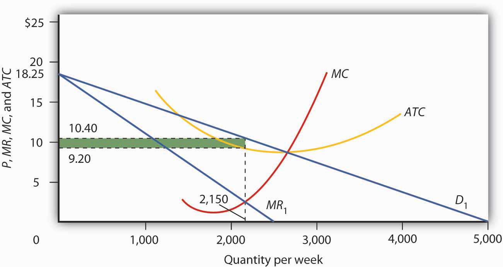
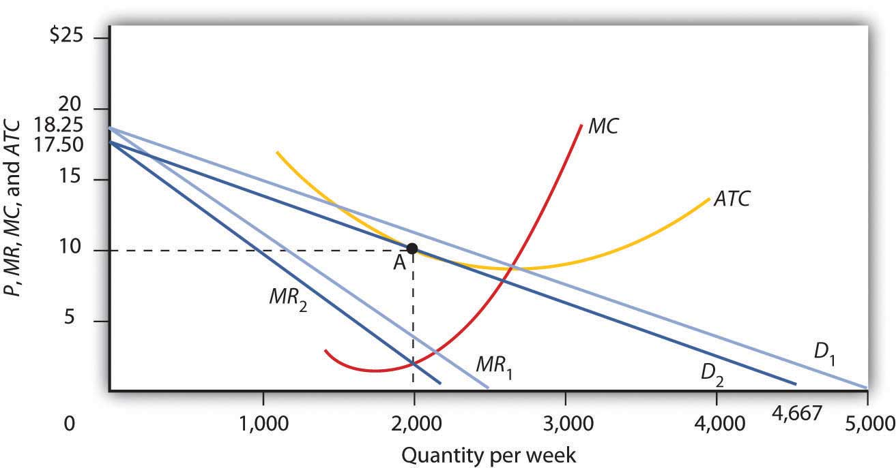
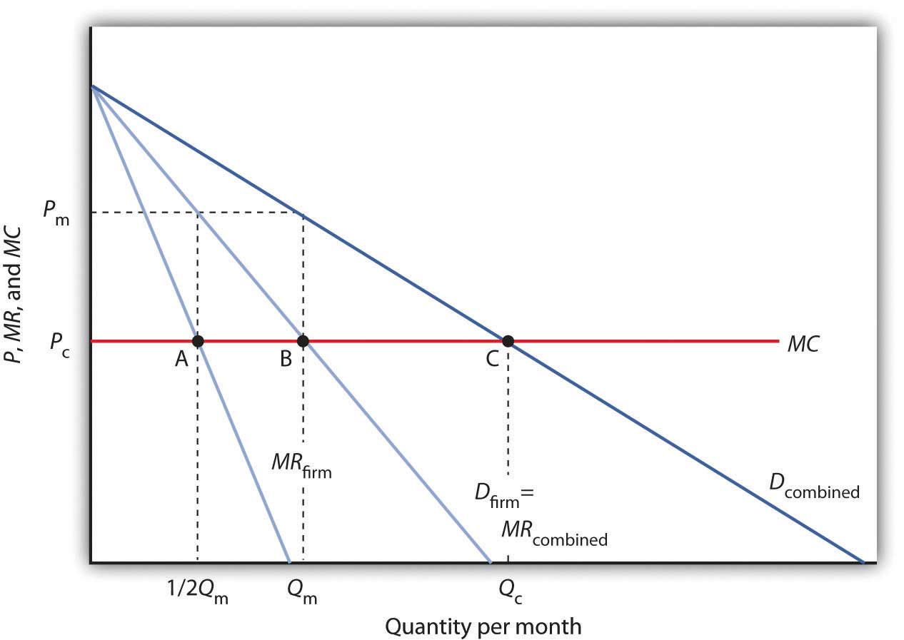
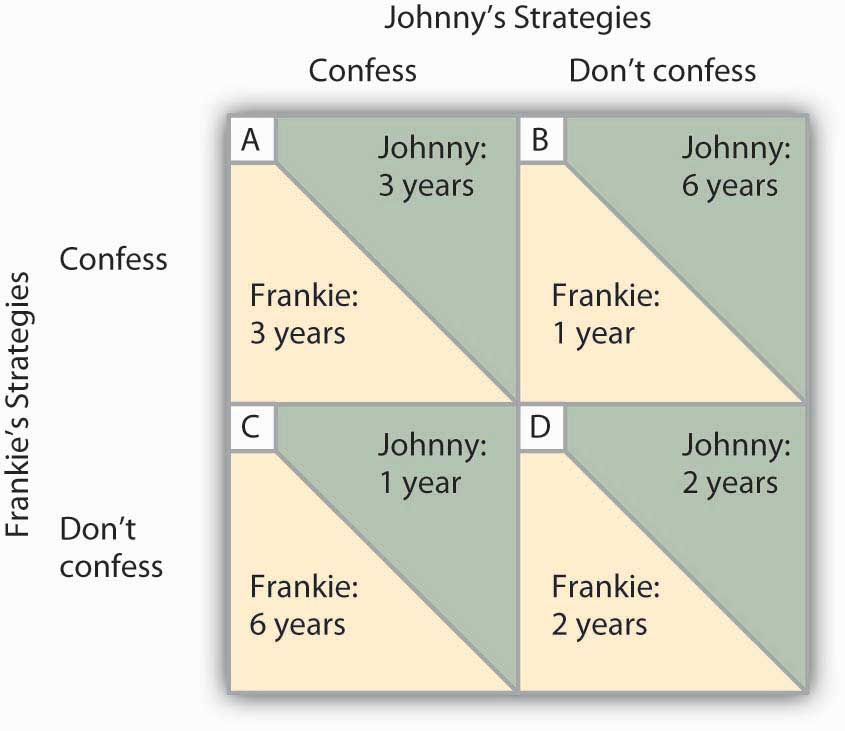
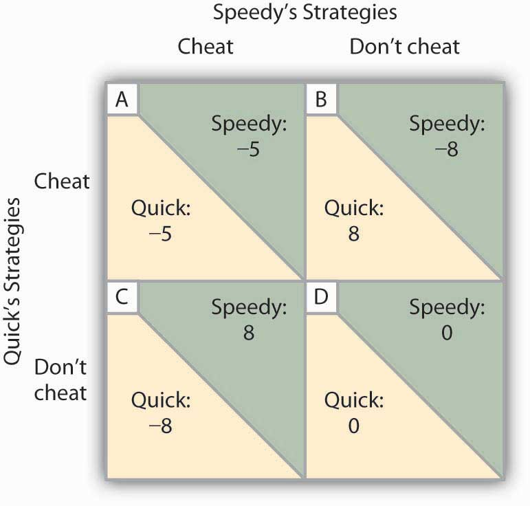

Groupon, the online coupon company offering time-limited deals requiring a minimum number of buyers, seemed to come out of nowhere. It was founded in 2008. In 2009, it operated in 30 cities in the United States and had 120 employees, 2 million subscribers, and revenues of $33 million. By the end of 2010, it operated in 565 cities around the world, had 4,000 employees, 51 million subscribers, and revenue of $760 million. Its first quarter 2011 revenue of $645 million was almost as much as the total revenue for 2010. By mid-2011, it had 8,000 employees and 83 million subscribers. On June 2, it announced plans for an initial sale of its stock. On November 4, 2011 it raised $700 million, which made it the largest initial public offering of a U.S. internet company since 2004 when Google raised $1.7 billion.
Despite the hoopla surrounding what some have referred to as the fastest growing company ever, its CEO Andrew Mason once remarked, “By this time next year, we will either be on our way to becoming one of the great technology brands or a cool idea by people who were out-executed and out-innovated by others.” With such a meteoric rise, why such a tempered comment? The company held a market share in 2011 of over 60% in the United States. One of its main competitors was LivingSocial, which received funding from Amazon. Would it be easy or hard for other firms to enter this industry? The Dealmap lets consumers know about all the daily deals in a city, and Facebook is beginning to talk about offering local discounts as well. Network effects also seemed weak, as businesses and consumers could easily work with or check out other sites.
In other words, in what type of market structure would Groupon continue to exist? Neither perfect competition nor monopoly seemed likely. In 2011 Groupon was charging businesses half of the discounted price of a voucher. Can it hold onto this price-setting power? Can it find strategies to maintain its dominance? Can it create brand loyalty? Will “Groupon anxiety,” a term defined by the Urban Dictionary to mean ”the preoccupation and feeling of anxiousness and not being able to sleep knowing that a new Groupon will be released after 1am” give way to “Groupon fatigue,” asked the Economist? “Groupon Anxiety: The Online-Coupon Firm Will Have to Move Fast to Retain Its Impressive Lead,” Economist, March 17, 2011, p. 70–71; Julianne Pepitone, “Groupon Files to Raise $750 million in IPO,” CNNMoney.com, June 2, 2011.
Its beginnings hardly suggest the aloof world of perfect competition where consumers are indifferent about which firm has produced a particular product, where each firm knows it can sell all it wants at the going market price, and where firms must settle for zero economic profit in the long run. Nor is it the world of monopoly, where a single firm maximizes its profits, believing that barriers to entry will keep out would-be competitors, at least for a while. This is the world of imperfect competition, one that lies between the idealized extremes of perfect competition and monopoly. It is a world in which firms battle over market shares, in which economic profits may persist, in which rivals try to outguess each other with pricing, advertising, and product-development strategies.
The spectrum of business enterprise ranges from perfectly competitive firms to monopoly. Between these extremes lies the business landscape in which the vast majority of firms—those in the world of imperfect competition—actually operate. Imperfect competitionA market structure with more than one firm in an industry in which at least one firm is a price setter. is a market structure with more than one firm in an industry in which at least one firm is a price setter. An imperfectly competitive firm has a degree of monopoly power, either based on product differentiation that leads to a downward-sloping demand curve or resulting from the interaction of rival firms in an industry with only a few firms.
There are two broad categories of imperfectly competitive markets. The first is one in which many firms compete, each offering a slightly different product. The second is one in which the industry is dominated by a few firms. Important features of both kinds of markets are advertising and price discrimination, which we examine later in this chapter.
Unlike the chapters on perfect competition and monopoly, this chapter does not provide a single model to explain firms’ behavior. There are too many variations on an uncertain theme for one model to explain the complexities of imperfect competition. Rather, the chapter provides an overview of some of the many different models and explanations advanced by economists for the behavior of firms in the imperfectly competitive markets. The analytical tools you have acquired in the course of studying the models of competitive and monopoly markets will be very much in evidence in this discussion.
The first model of an imperfectly competitive industry that we shall investigate has conditions quite similar to those of perfect competition. The model of monopolistic competition assumes a large number of firms. It also assumes easy entry and exit. This model differs from the model of perfect competition in one key respect: it assumes that the goods and services produced by firms are differentiated. This differentiation may occur by virtue of advertising, convenience of location, product quality, reputation of the seller, or other factors. Product differentiation gives firms producing a particular product some degree of price-setting or monopoly power. However, because of the availability of close substitutes, the price-setting power of monopolistically competitive firms is quite limited. Monopolistic competitionA model characterized by many firms producing similar but differentiated products in a market with easy entry and exit. is a model characterized by many firms producing similar but differentiated products in a market with easy entry and exit.
Restaurants are a monopolistically competitive sector; in most areas there are many firms, each is different, and entry and exit are very easy. Each restaurant has many close substitutes—these may include other restaurants, fast-food outlets, and the deli and frozen-food sections at local supermarkets. Other industries that engage in monopolistic competition include retail stores, barber and beauty shops, auto-repair shops, service stations, banks, and law and accounting firms.
Suppose a restaurant raises its prices slightly above those of similar restaurants with which it competes. Will it have any customers? Probably. Because the restaurant is different from other restaurants, some people will continue to patronize it. Within limits, then, the restaurant can set its own prices; it does not take the market prices as given. In fact, differentiated markets imply that the notion of a single “market price” is meaningless.
Because products in a monopolistically competitive industry are differentiated, firms face downward-sloping demand curves. Whenever a firm faces a downward-sloping demand curve, the graphical framework for monopoly can be used. In the short run, the model of monopolistic competition looks exactly like the model of monopoly. An important distinction between monopoly and monopolistic competition, however, emerges from the assumption of easy entry and exit. In monopolistic competition, entry will eliminate any economic profits in the long run. We begin with an analysis of the short run.
Because a monopolistically competitive firm faces a downward-sloping demand curve, its marginal revenue curve is a downward-sloping line that lies below the demand curve, as in the monopoly model. We can thus use the model of monopoly that we have already developed to analyze the choices of a monopsony in the short run.
Figure 11.1 "Short-Run Equilibrium in Monopolistic Competition" shows the demand, marginal revenue, marginal cost, and average total cost curves facing a monopolistically competitive firm, Mama’s Pizza. Mama’s competes with several other similar firms in a market in which entry and exit are relatively easy. Mama’s demand curve D1 is downward-sloping; even if Mama’s raises its prices above those of its competitors, it will still have some customers. Given the downward-sloping demand curve, Mama’s marginal revenue curve MR1 lies below demand. To sell more pizzas, Mama’s must lower its price, and that means its marginal revenue from additional pizzas will be less than price.
Figure 11.1 Short-Run Equilibrium in Monopolistic Competition
Looking at the intersection of the marginal revenue curve MR1 and the marginal cost curve MC, we see that the profit-maximizing quantity is 2,150 units per week. Reading up to the average total cost curve ATC, we see that the cost per unit equals $9.20. Price, given on the demand curve D1, is $10.40, so the profit per unit is $1.20. Total profit per week equals $1.20 times 2,150, or $2,580; it is shown by the shaded rectangle.
Given the marginal revenue curve MR and marginal cost curve MC, Mama’s will maximize profits by selling 2,150 pizzas per week. Mama’s demand curve tells us that it can sell that quantity at a price of $10.40. Looking at the average total cost curve ATC, we see that the firm’s cost per unit is $9.20. Its economic profit per unit is thus $1.20. Total economic profit, shown by the shaded rectangle, is $2,580 per week.
We see in Figure 11.1 "Short-Run Equilibrium in Monopolistic Competition" that Mama’s Pizza is earning an economic profit. If Mama’s experience is typical, then other firms in the market are also earning returns that exceed what their owners could be earning in some related activity. Positive economic profits will encourage new firms to enter Mama’s market.
As new firms enter, the availability of substitutes for Mama’s pizzas will increase, which will reduce the demand facing Mama’s Pizza and make the demand curve for Mama’s Pizza more elastic. Its demand curve will shift to the left. Any shift in a demand curve shifts the marginal revenue curve as well. New firms will continue to enter, shifting the demand curves for existing firms to the left, until pizza firms such as Mama’s no longer make an economic profit. The zero-profit solution occurs where Mama’s demand curve is tangent to its average total cost curve—at point A in Figure 11.2 "Monopolistic Competition in the Long Run". Mama’s price will fall to $10 per pizza and its output will fall to 2,000 pizzas per week. Mama’s will just cover its opportunity costs, and thus earn zero economic profit. At any other price, the firm’s cost per unit would be greater than the price at which a pizza could be sold, and the firm would sustain an economic loss. Thus, the firm and the industry are in long-run equilibrium. There is no incentive for firms to either enter or leave the industry.
Figure 11.2 Monopolistic Competition in the Long Run
The existence of economic profits in a monopolistically competitive industry will induce entry in the long run. As new firms enter, the demand curve D1 and marginal revenue curve MR1 facing a typical firm will shift to the left, to D2 and MR2. Eventually, this shift produces a profit-maximizing solution at zero economic profit, where D2 is tangent to the average total cost curve ATC (point A). The long-run equilibrium solution here is an output of 2,000 units per week at a price of $10 per unit.
Had Mama’s Pizza and other similar restaurants been incurring economic losses, the process of moving to long-run equilibrium would work in reverse. Some firms would exit. With fewer substitutes available, the demand curve faced by each remaining firm would shift to the right. Price and output at each restaurant would rise. Exit would continue until the industry was in long-run equilibrium, with the typical firm earning zero economic profit.
Such comings and goings are typical of monopolistic competition. Because entry and exit are easy, favorable economic conditions in the industry encourage start-ups. New firms hope that they can differentiate their products enough to make a go of it. Some will; others will not. Competitors to Mama’s may try to improve the ambience, play different music, offer pizzas of different sizes and types. It might take a while for other restaurants to come up with just the right product to pull customers and profits away from Mama’s. But as long as Mama’s continues to earn economic profits, there will be incentives for other firms to try.
The term “monopolistic competition” is easy to confuse with the term “monopoly.” Remember, however, that the two models are characterized by quite different market conditions. A monopoly is a single firm with high barriers to entry. Monopolistic competition implies an industry with many firms, differentiated products, and easy entry and exit.
Why is the term monopolistic competition used to describe this type of market structure? The reason is that it bears some similarities to both perfect competition and to monopoly. Monopolistic competition is similar to perfect competition in that in both of these market structures many firms make up the industry and entry and exit are fairly easy. Monopolistic competition is similar to monopoly in that, like monopoly firms, monopolistically competitive firms have at least some discretion when it comes to setting prices. However, because monopolistically competitive firms produce goods that are close substitutes for those of rival firms, the degree of monopoly power that monopolistically competitive firms possess is very low.
The long-run equilibrium solution in monopolistic competition always produces zero economic profit at a point to the left of the minimum of the average total cost curve. That is because the zero profit solution occurs at the point where the downward-sloping demand curve is tangent to the average total cost curve, and thus the average total cost curve is itself downward-sloping. By expanding output, the firm could lower average total cost. The firm thus produces less than the output at which it would minimize average total cost. A firm that operates to the left of the lowest point on its average total cost curve has excess capacitySituation in which a firm operates to the left of the lowest point on its average total cost curve..
Because monopolistically competitive firms charge prices that exceed marginal cost, monopolistic competition is inefficient. The marginal benefit consumers receive from an additional unit of the good is given by its price. Since the benefit of an additional unit of output is greater than the marginal cost, consumers would be better off if output were expanded. Furthermore, an expansion of output would reduce average total cost. But monopolistically competitive firms will not voluntarily increase output, since for them, the marginal revenue would be less than the marginal cost.
One can thus criticize a monopolistically competitive industry for falling short of the efficiency standards of perfect competition. But monopolistic competition is inefficient because of product differentiation. Think about a monopolistically competitive activity in your area. Would consumers be better off if all the firms in this industry produced identical products so that they could match the assumptions of perfect competition? If identical products were impossible, would consumers be better off if some of the firms were ordered to shut down on grounds the model predicts there will be “too many” firms? The inefficiency of monopolistic competition may be a small price to pay for a wide range of product choices. Furthermore, remember that perfect competition is merely a model. It is not a goal toward which an economy might strive as an alternative to monopolistic competition.
Suppose the monopolistically competitive restaurant industry in your town is in long-run equilibrium, when difficulties in hiring cause restaurants to offer higher wages to cooks, servers, and dishwashers. Using graphs similar to Figure 11.1 "Short-Run Equilibrium in Monopolistic Competition" and Figure 11.2 "Monopolistic Competition in the Long Run", explain the effect of the wage increase on the industry in the short run and in the long run. Be sure to include in your answer an explanation of what happens to price, output, and economic profit.
In the early 1900s, there were about 2,000 local beer breweries across America. Prohibition in the 1920s squashed the industry; after the repeal of Prohibition, economies of scale eliminated smaller breweries. By the early 1980s only about 40 remained in existence.
But the American desire for more variety has led to the rebirth of the nearly defunct industry. To be sure, large, national beer companies dominated the overall ale market in 1980 and they still do today, with 43 large national and regional breweries sharing about 85% of the U.S. market for beer. But their emphasis on similarly tasting, light lagers (at least, until they felt threatened enough by the new craft brewers to come up with their own specialty brands) left many niches to be filled. One niche was filled by imports, accounting for about 12% of the U.S. market. That leaves 3 to 4% of the national market for the domestic specialty or “craft” brewers.
The new craft brewers, which include contract brewers, regional specialty brewers, microbreweries, and brewpubs, offer choice. As Neal Leathers at Big Sky Brewing Company in Missoula, Montana, put it, “We sort of convert people. If you haven’t had very many choices, and all of a sudden you get choices—especially if those choices involve a lot of flavor and quality—it’s hard to go back.”
Aided by the recent legalization in most states of brewpubs, establishments where beers are manufactured and retailed on the same premises, the number of microbreweries grew substantially over the last 25 years. A recent telephone book in Colorado Springs, a city with a population of about a half million and the home of the authors of your textbook, listed nine microbreweries and brewpubs; more exist but prefer to be listed as restaurants.
To what extent does this industry conform to the model of monopolistic competition? Clearly, the microbreweries sell differentiated products, giving them some degree of price-setting power. A sample of four brewpubs in the downtown area of Colorado Springs revealed that the price of a house beer ranged from 13 to 22 cents per ounce.
Entry into the industry seems fairly easy, judging from the phenomenal growth of the industry. After more than a decade of explosive growth and then a period of leveling off, the number of craft breweries, as they are referred to by the Brewers Association, stood at 1,716 in 2010. The start-up cost ranges from $100,000 to $400,000, according to Kevin Head, the owner of the Rhino Bar, also in Missoula.
The monopolistically competitive model also predicts that while firms can earn positive economic profits in the short run, entry of new firms will shift the demand curve facing each firm to the left and economic profits will fall toward zero. Some firms will exit as competitors win customers away from them. In the combined microbrewery and brewpub subsectors of the craft beer industry in 2010, for example, there were 152 openings and 43 closings.
Sources: Jim Ludwick, “The Art of Zymurgy—It’s the Latest Thing: Microbrewers Are Tapping into the New Specialty Beer Market,” Missoulian (November 29, 1996): p. A1; Brewers Association, “2010 Craft Brewing Statistics,” http://www.brewersassociation.org/pages/business-tools/craft-brewing-statistics/number-of-breweries.
As shown in Panel (a), higher wages would cause both MC and ATC to increase. The upward shift in MC from MC1 to MC2 would cause the profit-maximizing level of output (number of meals served per week, in this case) to fall from q1 to q2 and price to increase from P1 to P2. The increase in ATC from ATC1 to ATC2 would mean that some restaurants would be earning negative economic profits, as shown by the shaded area.
As shown in Panel (b), in the long run, as some restaurants close down, the demand curve faced by the typical remaining restaurant would shift to the right from D1 to D2. The demand curve shift leads to a corresponding shift in marginal revenue from MR1 to MR2. Price would increase further from P2 to P3, and output would increase to q3, above q2. In the new long-run equilibrium, restaurants would again be earning zero economic profit.
In July, 2005, General Motors Corporation (GMC) offered “employee discount pricing” to virtually all GMC customers, not just employees and their relatives. This new marketing strategy introduced by GMC obviously affected Ford, Chrysler, Toyota and other automobile and truck manufacturers; Ford matched GMC’s employee-discount plan by offering up to $1,000 to its own employees who convinced friends to purchase its cars and trucks. Ford also offered its customers the same prices paid by its employees. By mid-July, Chrysler indicated that it was looking at many alternatives, but was waiting for GMC to make its next move. Ultimately, Chrysler also offered employee discount pricing.
Toyota had to respond. It quickly developed a new marketing strategy of its own, which included lowering the prices of its cars and offering new financing terms. The responses of Ford, Chrysler, and Toyota to GMC’s pricing strategy obviously affected the outcome of that strategy. Similarly, a decision by Procter & Gamble to lower the price of Crest toothpaste may elicit a response from Colgate-Palmolive, and that response will affect the sales of Crest. In an oligopolySituation in which a market is dominated by a few firms, each of which recognizes that its own actions will produce a response from its rivals and that those responses will affect it., the fourth and final market structure that we will study, the market is dominated by a few firms, each of which recognizes that its own actions will produce a response from its rivals and that those responses will affect it.
The firms that dominate an oligopoly recognize that they are interdependent: What one firm does affects each of the others. This interdependence stands in sharp contrast to the models of perfect competition and monopolistic competition, where we assume that each firm is so small that it assumes the rest of the market will, in effect, ignore what it does. A perfectly competitive firm responds to the market, not to the actions of any other firm. A monopolistically competitive firm responds to its own demand, not to the actions of specific rivals. These presumptions greatly simplify the analysis of perfect competition and monopolistic competition. We do not have that luxury in oligopoly, where the interdependence of firms is the defining characteristic of the market.
Some oligopoly industries make standardized products: steel, aluminum, wire, and industrial tools. Others make differentiated products: cigarettes, automobiles, computers, ready-to-eat breakfast cereal, and soft drinks.
Oligopoly means that a few firms dominate an industry. But how many is “a few,” and how large a share of industry output does it take to “dominate” the industry?
Compare, for example, the ready-to-eat breakfast cereal industry and the ice cream industry. The cereal market is dominated by two firms, Kellogg’s and General Mills, which together hold more than half the cereal market. This oligopoly operates in a highly concentrated market. The market for ice cream, where the four largest firms account for just less than a third of output, is much less concentrated.
One way to measure the degree to which output in an industry is concentrated among a few firms is to use a concentration ratioThe percentage of output accounted for by the largest firms in an industry., which reports the percentage of output accounted for by the largest firms in an industry. The higher the concentration ratio, the more the firms in the industry take account of their rivals’ behavior. The lower the concentration ratio, the more the industry reflects the characteristics of monopolistic competition or perfect competition.
The U.S. Census Bureau, based on surveys it conducts of manufacturing firms every five years, reports concentration ratios. These surveys show concentration ratios for the largest 4, 8, 20, and 50 firms in each industry category. Some concentration ratios from the 2007 survey, the latest available, are reported in Table 11.1 "Concentration Ratios and Herfindahl–Hirschman Indexes". Notice that the four-firm concentration ratio for breakfast cereals is 80%; for ice cream it is 53%.
Table 11.1 Concentration Ratios and Herfindahl–Hirschman Indexes
| Industry | Largest 4 firms | Largest 8 firms | Largest 20 firms | Largest 50 firms | HHI |
|---|---|---|---|---|---|
| Ice cream | 53 | 66 | 84 | 94 | 954 |
| Breakfast cereals | 80 | 92 | 100 | 100 | 2426 |
| Cigarettes | 98 | 99 | 100 | *D | |
| Men’s and boys’ shirts | 56 | 75 | 90 | 98 | 1102 |
| Women’s and girls’ blouses and shirts | 42 | 58 | 80 | 94 | 719 |
| Automobiles | 68 | 91 | 99 | 100 | 1449 |
| Sporting and athletic goods | 27 | 38 | 53 | 68 | 253 |
| Dental laboratories | 18 | 24 | 29 | 36 | 102 |
| *D, data withheld by the government to avoid revealing information about specific firms. | |||||
Two measures of industry concentration are reported by the Census Bureau: concentration ratios and the Herfindahl–Hirschman Index (HHI).
Source: Selected statistics from Sector 31: Manufacturing: Subject Series—Concentration Ratios: Share of Value of Shipments Accounted for by the 4, 8, 20, and 50 Largest Companies for Industries: 2007 at http://www.census.gov/econ/concentration.html.
An alternative measure of concentration is found by squaring the percentage share (stated as a whole number) of each firm in an industry, then summing these squared market shares to derive a Herfindahl–Hirschman Index (HHI)An alternative measure of concentration found by squaring the percentage share (stated as a whole number) of each firm in an industry, then summing these squared market shares.. The largest HHI possible is the case of monopoly, where one firm has 100% of the market; the index is 1002, or 10,000. An industry with two firms, each with 50% of total output, has an HHI of 5,000 (502 + 502). In an industry with 10,000 firms that have 0.01% of the market each, the HHI is 1. Herfindahl–Hirschman Indexes reported by the Census Bureau are also given in Table 11.1 "Concentration Ratios and Herfindahl–Hirschman Indexes". Notice that the HHI is 2,521 for breakfast cereals and only 736 for ice cream, suggesting that the ice cream industry is more competitive than the breakfast cereal industry.
In some cases, the census data understate the degree to which a few firms dominate the market. One problem is that industry categories may be too broad to capture significant cases of industry dominance. The sporting goods industry, for example, appears to be highly competitive if we look just at measures of concentration, but markets for individual goods, such as golf clubs, running shoes, and tennis rackets, tend to be dominated by a few firms. Further, the data reflect shares of the national market. A tendency for regional domination does not show up. For example, the concrete industry appears to be highly competitive. But concrete is produced in local markets—it is too expensive to ship it very far—and many of these local markets are dominated by a handful of firms.
The census data can also overstate the degree of actual concentration. The “automobiles” category, for example, has a four-firm concentration ratio that suggests the industry is strongly dominated by four large firms (in fact, U.S. production is dominated by three: General Motors, Ford, and Chrysler). Those firms hardly account for all car sales in the United States, however, as other foreign producers have captured a large portion of the domestic market. Including those foreign competitors suggests a far less concentrated industry than the census data imply.
There is no single model of profit-maximizing oligopoly behavior that corresponds to economists’ models of perfect competition, monopoly, and monopolistic competition. Uncertainty about the interaction of rival firms makes specification of a single model of oligopoly impossible. Instead, economists have devised a variety of models that deal with the uncertain nature of rivals’ responses in different ways. In this section we review one type of oligopoly model, the collusion model. After examining this traditional approach to the analysis of oligopoly behavior, we shall turn to another method of examining oligopolistic interaction: game theory.
Firms in any industry could achieve the maximum profit attainable if they all agreed to select the monopoly price and output and to share the profits. One approach to the analysis of oligopoly is to assume that firms in the industry collude, selecting the monopoly solution.
Suppose an industry is a duopolyAn industry that has only two firms., an industry with two firms. Figure 11.3 "Monopoly Through Collusion" shows a case in which the two firms are identical. They sell identical products and face identical demand and cost conditions. To simplify the analysis, we will assume that each has a horizontal marginal cost curve, MC. The demand and marginal revenue curves are the same for both firms. We find the combined demand curve for the two firms, Dcombined, by adding the individual demand curves together. Because one firm’s demand curve, Dfirm, represents one-half of market demand, it is the same as the combined marginal revenue curve for the two firms. If these two firms act as a monopoly, together they produce Qm and charge a price Pm. This result is achieved if each firm selects its profit-maximizing output, which equals 1/2 Qm. This solution is inefficient; the efficient solution is price Pc and output Qc, found where the combined market demand curve Dcombined and the marginal cost curve MC intersect.
Figure 11.3 Monopoly Through Collusion
Two identical firms have the same horizontal marginal cost curve MC. Their demand curves Dfirm and marginal revenue curves MRfirm are also identical. The combined demand curve is Dcombined; the combined marginal revenue curve is MRcombined. The profits of the two firms are maximized if each produces 1/2 Qm at point A. Industry output at point B is thus Qm and the price is Pm. At point C, the efficient solution output would be Qc, and the price would equal MC.
In the simplest form of collusion, overt collusionWhen firms openly agree on price, output, and other decisions aimed at achieving monopoly profits., firms openly agree on price, output, and other decisions aimed at achieving monopoly profits. Firms that coordinate their activities through overt collusion and by forming collusive coordinating mechanisms make up a cartelFirms that coordinate their activities through overt collusion and by forming collusive coordinating mechanisms..
Firms form a cartel to gain monopoly power. A successful cartel can earn large profits, but there are several problems with forming and maintaining one. First, in many countries, including the United States, cartels are generally illegal.One legal cartel is the NCAA, which many economists regard as a successful device through which member firms (colleges and universities) collude on a wide range of rules through which they produce sports. They are banned, because their purpose is to raise prices and restrict output. Second, the cartel may not succeed in inducing all firms in the industry to join. Firms that remain outside the cartel can compete by lowering price, and thus they prevent the cartel from achieving the monopoly solution. Third, there is always an incentive for individual members to cheat on cartel agreements. Suppose the members of a cartel have agreed to impose the monopoly price in their market and to limit their output accordingly. Any one firm might calculate that it could charge slightly less than the cartel price and thus capture a larger share of the market for itself. Cheating firms expand output and drive prices down below the level originally chosen.
The Organization of Petroleum Exporting Countries (OPEC), perhaps the best-known cartel, is made up of 13 oil-producing countries. In the 1970s, OPEC successfully acted like a monopoly by restricting output and raising prices. By the mid-1980s, however, the monopoly power of the cartel had been weakened by expansion of output by nonmember producers such as Mexico and Norway and by cheating among the cartel members.
An alternative to overt collusion is tacit collusionAn unwritten, unspoken understanding through which firms agree to limit their competition., an unwritten, unspoken understanding through which firms agree to limit their competition. Firms may, for example, begin following the price leadership of a particular firm, raising or lowering their prices when the leader makes such a change. The price leader may be the largest firm in the industry, or it may be a firm that has been particularly good at assessing changes in demand or cost. At various times, tacit collusion has been alleged to occur in a wide range of industries, including steel, cars, and breakfast cereals.
It is difficult to know how common tacit collusion is. The fact that one firm changes its price shortly after another one does cannot prove that a tacit conspiracy exists. After all, we expect to see the prices of all firms in a perfectly competitive industry moving together in response to changes in demand or production costs.
Oligopoly presents a problem in which decision makers must select strategies by taking into account the responses of their rivals, which they cannot know for sure in advance. The Start Up feature at the beginning of this chapter suggested the uncertainty eBay faces as it considers the possibility of competition from Google. A choice based on the recognition that the actions of others will affect the outcome of the choice and that takes these possible actions into account is called a strategic choiceA choice based on the recognition that the actions of others will affect the outcome of the choice and that takes these possible actions into account.. Game theoryAn analytical approach through which strategic choices can be assessed. is an analytical approach through which strategic choices can be assessed.
Among the strategic choices available to an oligopoly firm are pricing choices, marketing strategies, and product-development efforts. An airline’s decision to raise or lower its fares—or to leave them unchanged—is a strategic choice. The other airlines’ decision to match or ignore their rival’s price decision is also a strategic choice. IBM boosted its share in the highly competitive personal computer market in large part because a strategic product-development strategy accelerated the firm’s introduction of new products.
Once a firm implements a strategic decision, there will be an outcome. The outcome of a strategic decision is called a payoffThe outcome of a strategic decision.. In general, the payoff in an oligopoly game is the change in economic profit to each firm. The firm’s payoff depends partly on the strategic choice it makes and partly on the strategic choices of its rivals. Some firms in the airline industry, for example, raised their fares in 2005, expecting to enjoy increased profits as a result. They changed their strategic choices when other airlines chose to slash their fares, and all firms ended up with a payoff of lower profits—many went into bankruptcy.
We shall use two applications to examine the basic concepts of game theory. The first examines a classic game theory problem called the prisoners’ dilemma. The second deals with strategic choices by two firms in a duopoly.
Suppose a local district attorney (DA) is certain that two individuals, Frankie and Johnny, have committed a burglary, but she has no evidence that would be admissible in court.
The DA arrests the two. On being searched, each is discovered to have a small amount of cocaine. The DA now has a sure conviction on a possession of cocaine charge, but she will get a conviction on the burglary charge only if at least one of the prisoners confesses and implicates the other.
The DA decides on a strategy designed to elicit confessions. She separates the two prisoners and then offers each the following deal: “If you confess and your partner doesn’t, you will get the minimum sentence of one year in jail on the possession and burglary charges. If you both confess, your sentence will be three years in jail. If your partner confesses and you do not, the plea bargain is off and you will get six years in prison. If neither of you confesses, you will each get two years in prison on the drug charge.”
The two prisoners each face a dilemma; they can choose to confess or not confess. Because the prisoners are separated, they cannot plot a joint strategy. Each must make a strategic choice in isolation.
The outcomes of these strategic choices, as outlined by the DA, depend on the strategic choice made by the other prisoner. The payoff matrix for this game is given in Figure 11.4 "Payoff Matrix for the Prisoners’ Dilemma". The two rows represent Frankie’s strategic choices; she may confess or not confess. The two columns represent Johnny’s strategic choices; he may confess or not confess. There are four possible outcomes: Frankie and Johnny both confess (cell A), Frankie confesses but Johnny does not (cell B), Frankie does not confess but Johnny does (cell C), and neither Frankie nor Johnny confesses (cell D). The portion at the lower left in each cell shows Frankie’s payoff; the shaded portion at the upper right shows Johnny’s payoff.
Figure 11.4 Payoff Matrix for the Prisoners’ Dilemma
The four cells represent each of the possible outcomes of the prisoners’ game.
If Johnny confesses, Frankie’s best choice is to confess—she will get a three-year sentence rather than the six-year sentence she would get if she did not confess. If Johnny does not confess, Frankie’s best strategy is still to confess—she will get a one-year rather than a two-year sentence. In this game, Frankie’s best strategy is to confess, regardless of what Johnny does. When a player’s best strategy is the same regardless of the action of the other player, that strategy is said to be a dominant strategyWhen a player’s best strategy is the same regardless of the action of the other player.. Frankie’s dominant strategy is to confess to the burglary.
For Johnny, the best strategy to follow, if Frankie confesses, is to confess. The best strategy to follow if Frankie does not confess is also to confess. Confessing is a dominant strategy for Johnny as well. A game in which there is a dominant strategy for each player is called a dominant strategy equilibriumA game in which there is a dominant strategy for each player.. Here, the dominant strategy equilibrium is for both prisoners to confess; the payoff will be given by cell A in the payoff matrix.
From the point of view of the two prisoners together, a payoff in cell D would have been preferable. Had they both denied participation in the robbery, their combined sentence would have been four years in prison—two years each. Indeed, cell D offers the lowest combined prison time of any of the outcomes in the payoff matrix. But because the prisoners cannot communicate, each is likely to make a strategic choice that results in a more costly outcome. Of course, the outcome of the game depends on the way the payoff matrix is structured.
The prisoners’ dilemma was played once, by two players. The players were given a payoff matrix; each could make one choice, and the game ended after the first round of choices.
The real world of oligopoly has as many players as there are firms in the industry. They play round after round: a firm raises its price, another firm introduces a new product, the first firm cuts its price, a third firm introduces a new marketing strategy, and so on. An oligopoly game is a bit like a baseball game with an unlimited number of innings—one firm may come out ahead after one round, but another will emerge on top another day. In the computer industry game, the introduction of personal computers changed the rules. IBM, which had won the mainframe game quite handily, struggles to keep up in a world in which rivals continue to slash prices and improve quality.
Oligopoly games may have more than two players, so the games are more complex, but this does not change their basic structure. The fact that the games are repeated introduces new strategic considerations. A player must consider not just the ways in which its choices will affect its rivals now, but how its choices will affect them in the future as well.
We will keep the game simple, however, and consider a duopoly game. The two firms have colluded, either tacitly or overtly, to create a monopoly solution. As long as each player upholds the agreement, the two firms will earn the maximum economic profit possible in the enterprise.
There will, however, be a powerful incentive for each firm to cheat. The monopoly solution may generate the maximum economic profit possible for the two firms combined, but what if one firm captures some of the other firm’s profit? Suppose, for example, that two equipment rental firms, Quick Rent and Speedy Rent, operate in a community. Given the economies of scale in the business and the size of the community, it is not likely that another firm will enter. Each firm has about half the market, and they have agreed to charge the prices that would be chosen if the two combined as a single firm. Each earns economic profits of $20,000 per month.
Quick and Speedy could cheat on their arrangement in several ways. One of the firms could slash prices, introduce a new line of rental products, or launch an advertising blitz. This approach would not be likely to increase the total profitability of the two firms, but if one firm could take the other by surprise, it might profit at the expense of its rival, at least for a while.
We will focus on the strategy of cutting prices, which we will call a strategy of cheating on the duopoly agreement. The alternative is not to cheat on the agreement. Cheating increases a firm’s profits if its rival does not respond. Figure 11.5 "To Cheat or Not to Cheat: Game Theory in Oligopoly" shows the payoff matrix facing the two firms at a particular time. As in the prisoners’ dilemma matrix, the four cells list the payoffs for the two firms. If neither firm cheats (cell D), profits remain unchanged.
Figure 11.5 To Cheat or Not to Cheat: Game Theory in Oligopoly
Two rental firms, Quick Rent and Speedy Rent, operate in a duopoly market. They have colluded in the past, achieving a monopoly solution. Cutting prices means cheating on the arrangement; not cheating means maintaining current prices. The payoffs are changes in monthly profits, in thousands of dollars. If neither firm cheats, then neither firm’s profits will change. In this game, cheating is a dominant strategy equilibrium.
This game has a dominant strategy equilibrium. Quick’s preferred strategy, regardless of what Speedy does, is to cheat. Speedy’s best strategy, regardless of what Quick does, is to cheat. The result is that the two firms will select a strategy that lowers their combined profits!
Quick Rent and Speedy Rent face an unpleasant dilemma. They want to maximize profit, yet each is likely to choose a strategy inconsistent with that goal. If they continue the game as it now exists, each will continue to cut prices, eventually driving prices down to the point where price equals average total cost (presumably, the price-cutting will stop there). But that would leave the two firms with zero economic profits.
Both firms have an interest in maintaining the status quo of their collusive agreement. Overt collusion is one device through which the monopoly outcome may be maintained, but that is illegal. One way for the firms to encourage each other not to cheat is to use a tit-for-tat strategy. In a tit-for-tat strategySituation in which a firm responds to cheating by cheating, and responds to cooperative behavior by cooperating. a firm responds to cheating by cheating, and it responds to cooperative behavior by cooperating. As each firm learns that its rival will respond to cheating by cheating, and to cooperation by cooperating, cheating on agreements becomes less and less likely.
Still another way firms may seek to force rivals to behave cooperatively rather than competitively is to use a trigger strategySituation in which a firm makes clear that it is willing and able to respond to cheating by permanently revoking an agreement., in which a firm makes clear that it is willing and able to respond to cheating by permanently revoking an agreement. A firm might, for example, make a credible threat to cut prices down to the level of average total cost—and leave them there—in response to any price-cutting by a rival. A trigger strategy is calculated to impose huge costs on any firm that cheats—and on the firm that threatens to invoke the trigger. A firm might threaten to invoke a trigger in hopes that the threat will forestall any cheating by its rivals.
Game theory has proved to be an enormously fruitful approach to the analysis of a wide range of problems. Corporations use it to map out strategies and to anticipate rivals’ responses. Governments use it in developing foreign-policy strategies. Military leaders play war games on computers using the basic ideas of game theory. Any situation in which rivals make strategic choices to which competitors will respond can be assessed using game theory analysis.
One rather chilly application of game theory analysis can be found in the period of the Cold War when the United States and the former Soviet Union maintained a nuclear weapons policy that was described by the acronym MAD, which stood for mutually assured destruction. Both countries had enough nuclear weapons to destroy the other several times over, and each threatened to launch sufficient nuclear weapons to destroy the other country if the other country launched a nuclear attack against it or any of its allies. On its face, the MAD doctrine seems, well, mad. It was, after all, a commitment by each nation to respond to any nuclear attack with a counterattack that many scientists expected would end human life on earth. As crazy as it seemed, however, it worked. For 40 years, the two nations did not go to war. While the collapse of the Soviet Union in 1991 ended the need for a MAD doctrine, during the time that the two countries were rivals, MAD was a very effective trigger indeed.
Of course, the ending of the Cold War has not produced the ending of a nuclear threat. Several nations now have nuclear weapons. The threat that Iran will introduce nuclear weapons, given its stated commitment to destroy the state of Israel, suggests that the possibility of nuclear war still haunts the world community.
Which model of oligopoly would seem to be most appropriate for analyzing firms’ behavior in each of the situations given below?
It may have been the remark by T. L. Chang, vice president of the Taiwan-based memory chip manufacturer Mosel-Vitelic that sparked the investigation by the U.S. Department of Justice Antitrust Division. Mr. Chang was quoted in Taiwan’s Commercial Times in May 2002 as admitting to price-fixing meetings held in Asia among the major producers of DRAM, or dynamic random access memory. DRAM is the most common semiconductor main memory format for storage and retrieval of information that is used in personal computers, mobile phones, digital cameras, MP3 music players, and other electronics products. At those meetings, as well as through emails and telephone conferences, the main manufacturers of DRAM not only decided what prices to charge and how much to make available but also exchanged information on DRAM sales for the purpose of monitoring and enforcing adherence to the agreed prices. The collusion lasted for three years—from 1999 to 2002. In December 2001, DRAM prices were less than $1. By May of 2002, price had risen to the $4 to $5 range.
The companies that were directly injured by the higher chip prices included Dell, Compaq, Hewlett-Packard, Apple, IBM, and Gateway. In the end, though, the purchasers of their products paid in the form of higher prices or less memory.
In December 2003, a Micron Technology sales manager pled guilty to obstruction of justice and served six months of home detention. The first chipmaker to plead guilty a year later was Germany-based Infineon Technologies, which was fined $160 million. In the end, four companies, Samsung being the largest, had been charged fines of more than $700 million, and a total of 3,185 days of jail time had been meted out to 16 corporate executives.
The European Union also prosecuted the DRAM price-fixing case, which ended with the imposition of over $400 million in fines and with Samsung paying almost half the total. The fines were somewhat lower than in the United States because in 2008 the European Union instituted new procedures that allow companies that settle to pay lower penalties. The EU hopes that the new procedures will shorten the length of cases and reduce the number of appeals. The EU initiated the DRAM price-fixing case in 2002 and finally settled it in 2010 using the new procedures.
The sharp reduction in the number of DRAM makers in the late 1990s undoubtedly made it easier to collude. The industry is still quite concentrated with Samsung holding about 40% of the market. The price, however, has fallen quite sharply in recent years.
Sources: James Kanter, “An Old Chip Cartel Case Is Brought to a Swift End,” New York Times, May 20, 2010, p. B13; Stephen Labaton, “Infineon to Pay a Fine in the Fixing of Chip Prices,” The New York Times, September 16, 2004; George Leopold and David Lammers, “DRAMs Under Gun in Antitrust Probe,” Electronic Engineering Times, 1124 (June 24, 2002):1, 102; Dylan McGrath, “Samsung’s DRAM Share Pushed Past 40 Percent in Q3, Says iSuppli,” Electronic Engineering Times, November 29, 2010, p. 17; Lee Sun-Young, “Samsung Cements DRAM Leadership,” Korea Herald, online, March 31, 2008; U.S. Department of Justice, “Sixth Samsung Executive Agrees to Plead Guilty to Participating in DRAM Price-Fixing Cartel,” press release, April 19, 2007; U.S. Department of Justice, “The Accomplishments of the U.S. Department of Justice, 2001–2009,” available at http://www.justice.gov/opa/documents/doj-accomplishments.pdf.
The models of monopoly and of imperfectly competitive markets allow us to explain two commonly observed features of many markets: advertising and price discrimination. Firms in markets that are not perfectly competitive try to influence the positions of the demand curves they face, and hence profits, through advertising. Profits may also be enhanced by charging different customers different prices. In this section we will discuss these aspects of the behavior of firms in markets that are not perfectly competitive.
Firms in monopoly, monopolistic competition, and oligopoly use advertising when they expect it to increase their profits. We see the results of these expenditures in a daily barrage of advertising on television, radio, newspapers, magazines, billboards, passing buses, park benches, the mail, home telephones, and the ubiquitous pop-up advertisements on our computers—in virtually every medium imaginable. Is all this advertising good for the economy?
We have already seen that a perfectly competitive economy with fully defined and easily transferable property rights will achieve an efficient allocation of resources. There is no role for advertising in such an economy, because everyone knows that firms in each industry produce identical products. Furthermore, buyers already have complete information about the alternatives available to them in the market.
But perfect competition contrasts sharply with imperfect competition. Imperfect competition can lead to a price greater than marginal cost and thus generate an inefficient allocation of resources. Firms in an imperfectly competitive market may advertise heavily. Does advertising cause inefficiency, or is it part of the solution? Does advertising insulate imperfectly competitive firms from competition and allow them to raise their prices even higher, or does it encourage greater competition and push prices down?
There are two ways in which advertising could lead to higher prices for consumers. First, the advertising itself is costly; it amounts to hundreds of billions of dollars annually in the United States. By pushing up production costs, advertising may push up prices. If the advertising serves no socially useful purpose, these costs represent a waste of resources in the economy. Second, firms may be able to use advertising to manipulate demand and create barriers to entry. If a few firms in a particular market have developed intense brand loyalty, it may be difficult for new firms to enter—the advertising creates a kind of barrier to entry. By maintaining barriers to entry, firms may be able to sustain high prices.
But advertising has its defenders. They argue that advertising provides consumers with useful information and encourages price competition. Without advertising, these defenders argue, it would be impossible for new firms to enter an industry. Advertising, they say, promotes competition, lowers prices, and encourages a greater range of choice for consumers.
Advertising, like all other economic phenomena, has benefits as well as costs. To assess those benefits and costs, let us examine the impact of advertising on the economy.
Advertising does inform us about products and their prices. Even critics of advertising generally agree that when advertising advises consumers about the availability of new products, or when it provides price information, it serves a useful function. But much of the information provided by advertising appears to be of limited value. Hearing that “Pepsi is the right one, baby” or “Tide gets your clothes whiter than white” may not be among the most edifying lessons consumers could learn.
Some economists argue, however, that even advertising that seems to tell us nothing may provide useful information. They note that a consumer is unlikely to make a repeat purchase of a product that turns out to be a dud. Advertising an inferior product is likely to have little payoff; people who do try it are not likely to try it again. It is not likely a firm could profit by going to great expense to launch a product that produced only unhappy consumers. Thus, if a product is heavily advertised, its producer is likely to be confident that many consumers will be satisfied with it and make repeat purchases. If this is the case, then the fact that the product is advertised, regardless of the content of that advertising, signals consumers that at least its producer is confident that the product will satisfy them.
If advertising creates consumer loyalty to a particular brand, then that loyalty may serve as a barrier to entry to other firms. Some brands of household products, such as laundry detergents, are so well established they may make it difficult for other firms to enter the market.
In general, there is a positive relationship between the degree of concentration of market power and the fraction of total costs devoted to advertising. This relationship, critics argue, is a causal one; the high expenditures on advertising are the cause of the concentration. To the extent that advertising increases industry concentration, it is likely to result in higher prices to consumers and lower levels of output. The higher prices associated with advertising are not simply the result of passing on the cost of the advertising itself to consumers; higher prices also derive from the monopoly power the advertising creates.
But advertising may encourage competition as well. By providing information to consumers about prices, for example, it may encourage price competition. Suppose a firm in a world of no advertising wants to increase its sales. One way to do that is to lower price. But without advertising, it is extremely difficult to inform potential customers of this new policy. The likely result is that there would be little response, and the price experiment would probably fail. Price competition would thus be discouraged in a world without advertising.
Empirical studies of markets in which advertising is not allowed have confirmed that advertising encourages price competition. One of the most famous studies of the effects of advertising looked at pricing for prescription eyeglasses. In the early 1970s, about half the states in the United States banned advertising by firms making prescription eyeglasses; the other half allowed it. A comparison of prices in the two groups of states by economist Lee Benham showed that the cost of prescription eyeglasses was far lower in states that allowed advertising than in states that banned it.Lee Benham, “The Effect of Advertising on the Price of Eyeglasses,” Journal of Law and Economics 15(2) (1972): 337–352. Mr. Benham’s research proved quite influential—virtually all states have since revoked their bans on such advertising. Similarly, a study of the cigarette industry revealed that before the 1970 ban on radio and television advertising market shares of the leading cigarette manufacturers had been declining, while after the ban market shares and profit margins increased.Woodrow Eckard, “Competition and the Cigarette TV Advertising Ban,” Economic Inquiry 29(1) (January 1991), 119–133.
Advertising may also allow more entry by new firms. When Kia, a South Korean automobile manufacturer, entered the U.S. low-cost compact car market in 1994, it flooded the airwaves with advertising. Suppose such advertising had not been possible. Could Kia have entered the market in the United States? It seems highly unlikely that any new product could be launched without advertising. The absence of advertising would thus be a barrier to entry that would increase the degree of monopoly power in the economy. A greater degree of monopoly power would, over time, translate into higher prices and reduced output.
Advertising is thus a two-edged sword. On the one hand, the existence of established and heavily advertised rivals may make it difficult for a new firm to enter a market. On the other hand, entry into most industries would be virtually impossible without advertising.
Economists do not agree on whether advertising helps or hurts competition in particular markets, but one general observation can safely be made—a world with advertising is more competitive than a world without advertising would be. The important policy question is more limited—and more difficult to answer: Would a world with less advertising be more competitive than a world with more?
Throughout the text up to this point, we have assumed that firms sold all units of output at the same price. In some cases, however, firms can charge different prices to different consumers. If such an opportunity exists, the firm can increase profits further.
When a firm charges different prices for the same good or service to different consumers, even though there is no difference in the cost to the firm of supplying these consumers, the firm is engaging in price discriminationSituation in which a firm charges different prices for the same good or service to different consumers, even though there is no difference in the cost to the firm of supplying these consumers.. Except for a few situations of price discrimination that have been declared illegal, such as manufacturers selling their goods to distributors at different prices when there are no differences in cost, price discrimination is generally legal.
The potential for price discrimination exists in all market structures except perfect competition. As long as a firm faces a downward-sloping demand curve and thus has some degree of monopoly power, it may be able to engage in price discrimination. But monopoly power alone is not enough to allow a firm to price discriminate. Monopoly power is one of three conditions that must be met:
Examples of price discrimination abound. Senior citizens and students are often offered discount fares on city buses. Children receive discount prices for movie theater tickets and entrance fees at zoos and theme parks. Faculty and staff at colleges and universities might receive discounts at the campus bookstore. Airlines give discount prices to customers who are willing to stay over a Saturday night. Physicians might charge wealthy patients more than poor ones. People who save coupons are able to get discounts on many items. In all these cases a firm charges different prices to different customers for what is essentially the same product.
Not every instance of firms charging different prices to different customers constitutes price discrimination. Differences in prices may reflect different costs associated with providing the product. One buyer might require special billing practices, another might require delivery on a particular day of the week, and yet another might require special packaging. Price differentials based on differences in production costs are not examples of price discrimination.
Why would a firm charge different prices to different consumers? The answer can be found in the marginal decision rule and in the relationship between marginal revenue and elasticity.
Suppose an airline has found that its long-run profit-maximizing solution for a round-trip flight between Minneapolis and Cleveland, when it charges the same price to all passengers, is to carry 300 passengers at $200 per ticket. The airline has a degree of monopoly power, so it faces a downward-sloping demand curve. The airline has noticed that there are essentially two groups of customers on each flight: people who are traveling for business reasons and people who are traveling for personal reasons (visiting family or friends or taking a vacation). We will call this latter group “tourists.” Of the 300 passengers, 200 are business travelers and 100 are tourists. The airline’s revenue from business travelers is therefore currently $40,000 ($200 times 200 business travelers) and from tourists is currently $20,000 ($200 times 100 tourists).
It seems likely that the price elasticities of demand of these two groups for a particular flight will differ. Tourists may have a wide range of substitutes: They could take their trips at a different time, they could vacation in a different area, or they could easily choose not to go at all. Business travelers, however, might be attending meetings or conferences at a particular time and in a particular city. They have options, of course, but the range of options is likely to be more limited than the range of options facing tourists. Given all this, tourists are likely to have relatively more price elastic demand than business travelers for a particular flight.
The difference in price elasticities suggests the airline could increase its profit by adjusting its pricing. To simplify, suppose that at a price of about $200 per ticket, demand by tourists is relatively price elastic and by business travelers is relatively less price elastic. It is plausible that the marginal cost of additional passengers is likely to be quite low, since the number of crewmembers will not vary and no food is served on short flights. Thus, if the airline can increase its revenue, its profits will increase. Suppose the airline lowers the price for tourists to $190. Suppose that the lower price encourages 10 more tourists to take the flight. Of course, the airline cannot charge different prices to different tourists; rather it charges $190 to all, now 110, tourists. Still, the airline’s revenue from tourist passengers increases from $20,000 to $20,900 ($190 times 110 tourists). Suppose it charges $250 to its business travelers. As a result, only 195 business travelers take the flight. The airline’s revenue from business travelers still rises from $40,000 to $48,750 ($250 times 195 business travelers). The airline will continue to change the mix of passengers, and increase the number of passengers, so long as doing so increases its profit. Because tourist demand is relatively price elastic, relatively small reductions in price will attract relatively large numbers of additional tourists. Because business demand is relatively less elastic, relatively large increases in price will discourage relatively small numbers of business travelers from making the trip. The airline will continue to reduce its price to tourists and raise its price to business travelers as long as it gains profit from doing so.
Of course, the airline can impose a discriminatory fare structure only if it can distinguish tourists from business travelers. Airlines typically do this by looking at the travel plans of their customers. Trips that involve a stay over a weekend, for example, are more likely to be tourist related, whereas trips that begin and end during the workweek are likely to be business trips. Thus, airlines charge much lower fares for trips that extend through a weekend than for trips that begin and end on weekdays.
In general, price-discrimination strategies are based on differences in price elasticity of demand among groups of customers and the differences in marginal revenue that result. A firm will seek a price structure that offers customers with more elastic demand a lower price and offers customers with relatively less elastic demand a higher price.
It is always in the interest of a firm to discriminate. Yet most of the goods and services that we buy are not offered on a discriminatory basis. A grocery store does not charge a higher price for vegetables to vegetarians, whose demand is likely to be less elastic than that of its omnivorous customers. An audio store does not charge a different price for Pearl Jam’s compact disks to collectors seeking a complete collection than it charges to casual fans who could easily substitute a disk from another performer. In these cases, firms lack a mechanism for knowing the different demands of their customers and for preventing resale.
Explain why price discrimination is often found in each of the following settings. Does it make sense in terms of price elasticity of demand?
Costa Rica boasts some of the most beautiful national parks in the world. An analysis by Francisco Alpizar, an economist with Gothenburg University in Sweden and CATIE, a tropical research institute in Costa Rica, suggests that Costa Rica should increase the degree to which it engages in price discrimination in pricing its national parks.
The country has experimented with a wide range of prices for its national parks, with the price varying between $.80 and $15 for a daily visit. With data on the resultant number of visitors at each price, Professor Alpizar was able to estimate the demand curve, compute the price elasticity of demand, and develop a recommendation for pricing the country’s national parks.
Presumably, foreign visitors have a relatively less elastic demand for visiting the parks than do local citizens. Local citizens have better knowledge of substitutes for the parks—namely other areas in Costa Rica. And, of course, once foreign travelers are in the country, they have already committed the expense of getting there, and are less likely to be willing to pass up a visit to national parks based on pricing considerations.
Costa Rica already discriminates to a large degree. Foreigners are charged $7 per day to visit the parks; locals are charged $2. Professor Alpizar proposes increasing the degree of discrimination.
He estimates that the price elasticity of foreign demand for visits to Costa Rica’s national parks is −0.68. That, of course, suggests inelastic demand. Costa Rica could increase its revenue from foreign visitors by increasing the fee. Professor Alpizar proposes increasing the fee for foreigners to $10. He proposes that the price charged to Costa Ricans remain at $2—a price that he calculates equals the marginal cost of an additional visit.
Professor Alpizar calculates a fee of $10 per visit by a foreigner would more than pay the country’s fixed cost of maintaining its extensive park system, which utilizes 24% of the country’s land. The higher price would thus allow the government to meet the major costs of operating the national parks. Charging a $2 fee to locals would satisfy the efficiency requirement that price equal marginal cost for local visitors; the $10 fee to foreigners would permit the country to exploit its monopoly power in permitting people to visit the parks. The Costa Rican government has asked Professor Alpizar to design three pilot projects aimed at incorporating his proposal to raise park fees to foreign visitors.
Source: Francisco Alpizar, “The Pricing of Protected Areas in Nature-Based Tourism: A Local Prospective,” Ecological Economics, 56(2) (February 2006): 294–307 and personal correspondence with Professor Alpizar.
This chapter examined the world of imperfect competition that exists between the idealized extremes of perfect competition and monopoly. Imperfectly competitive markets exist whenever there is more than one seller in a market and at least one seller has some degree of control over price.
We discussed two general types of imperfectly competitive markets: monopolistic competition and oligopoly. Monopolistic competition is characterized by many firms producing similar but differentiated goods and services in a market with easy entry and exit. Oligopoly is characterized by relatively few firms producing either standardized or differentiated products. There may be substantial barriers to entry and exit.
In the short run, a monopolistically competitive firm’s pricing and output decisions are the same as those of a monopoly. In the long run, economic profits will be whittled away by the entry of new firms and new products that increase the number of close substitutes. An industry dominated by a few firms is an oligopoly. Each oligopolist is aware of its interdependence with other firms in the industry and is constantly aware of the behavior of its rivals. Oligopolists engage in strategic decision making in order to determine their best output and pricing strategies as well as the best forms of nonprice competition.
Advertising in imperfectly competitive markets can increase the degree of competitiveness by encouraging price competition and promoting entry. It can also decrease competition by establishing brand loyalty and thus creating barriers to entry.
Where conditions permit, a firm can increase its profits by price discrimination, charging different prices to customers with different elasticities of demand. To practice price discrimination, a price-setting firm must be able to segment customers that have different elasticities of demand and must be able to prevent resale among its customers.
In the following list of goods and services, determine whether the item is produced under conditions of monopolistic competition or of oligopoly.
Suppose the monopolistically competitive barber shop industry in a community is in long-run equilibrium, and that the typical price is $20 per haircut. Moreover, the population is rising.
Consider the same industry as in Problem 1. Suppose the market is in long-run equilibrium and that an annual license fee is imposed on barber shops.
Industry A consists of four firms, each of which has an equal share of the market.
Given the payoff matrix (shown below) for a duopoly, consisting of Firm A and Firm B, in which each firm is considering an expanded advertising campaign, answer the following questions (all figures in the payoff matrix give changes in annual profits in millions of dollars):
Suppose that two industries each have a four-firm concentration ratio of 75%.
Suppose that a typical firm in a monopolistically competitive industry faces a demand curve given by:
q = 60 − (1/2)p, where q is quantity sold per week.The firm’s marginal cost curve is given by: MC = 60.